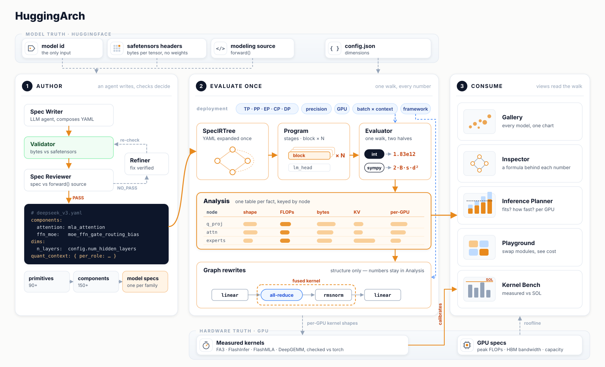

HuggingArch
Where does a transformer keep its history, and how much memory will it occupy? Give HuggingArch a model ID and a workload. It traces the model’s structure, counts the stored tensors and exposes the arithmetic behind the answer.
Try the Llama InspectorRun it locallyRead Han Shen’s illustrated walkthrough
Start with one more token
Suppose a chatbot has read 4,096 tokens. Its next query can reuse information stored for earlier positions. A key helps the query select a position and a value supplies information from that position. The amount of storage needed for the next step depends on which layers actually write new entries.
32,768 bytesLlama 3.2 1B adds this much per token for one sequence in BF16.
890 bytesDeepSeek V4.1 Flash adds this much growing cache per token on average.
Set the saved experiment to 4,096 tokens, then move ahead twice. DeepSeek adds 1,424 bytes on the first step and 356 on the second. The small increment comes from one writer. The larger increment comes from four. Select a context to see the exact totals and open the worked explanation. Explore the saved comparison.
Use the web Inspector
- Open the Inspector and enter
meta-llama/Llama-3.2-1Bin the model field. Choose Analyze. The direct link above carries the model, a batch size of one and a sequence length of 4,096. - Find Model composition. Read the KV-cache column for the attention blocks. In this model the same attention block runs 16 times. A row expresses the contribution of all the layers it represents. Click the row to locate those blocks on the architecture diagram.
- Trace the grouped-query attention block. The 32 query heads share 8 KV heads. Both a 64-element key and a 64-element value survive for each KV head. Calculate 16 × 8 × 64 × 2 vectors × 2 bytes. The result is 32 KiB per token and 128 MiB for 4,096 tokens.
- Repeat with
deepseek-ai/DeepSeek-V4.1-Flash. Find the window-only and compressed-attention rows. Ask which blocks write shared storage, which reuse it, and which storage stops growing after 128 positions. Open the DeepSeek Inspector.
For the author’s examples of the table and its connection to model structure, use the English screenshots at the end of the article’s second chapter. Inside the Inspector.
How a model ID becomes a number

Write down what the model does
The config supplies dimensions such as head counts. The checkpoint’s tensor headers describe stored shapes and formats. The forward implementation shows how tensors move through the model and which ones a later token can reuse. A spec encodes that behavior in YAML. Primitive operations make up reusable components such as attention, and a model definition assigns components to its layers. An authoring agent can draft a new spec. The project checks tensor accounting and reviews the spec against source evidence before adding it. Our run reused two bundled specs. How Shen builds a spec · Validation rules.
Evaluate the graph at a chosen workload
A tensor’s axes and dtype determine its bytes. A cache declaration adds the rule for how many positions survive. For the ordinary Llama key that rule is the full cached length. For a DeepSeek window it is the smaller of 128 and the current length. A half-rate pool contributes one slot per pair, rounded up. The backend applies these rules to the repeated blocks. Change the length and the same spec yields another result, with named operations to inspect. Cache evaluator.
Ask a question a prompt alone cannot verify
A chat prompt can elicit the familiar dense-cache equation. It leaves a harder question open: does this particular model write a separate entry in every layer? Here the engine reads named cached tensors from the spec, evaluates each storage rule and exposes each contribution. You can test the interpretation by comparing consecutive lengths. Independently, the tool reported a zero-byte difference between the modeled checkpoint tensors and the bundled headers for both models. Checkpoint agreement checks stored weights. Cache behavior additionally depends on the forward semantics. Inspect the two models’ extracted records.
Choose a view for the next question
| Question | Where to look |
|---|---|
| Which models deserve a closer look at long contexts? | Compare model families and their cache-growth curves in the Gallery. |
| Would a deployment fit in GPU memory? | Set the GPU, batch, context, precision and device layout in the Inference Planner. Inspect weight, cache and working-memory costs. |
| Why might the same graph have different traffic in two serving systems? | Inspect the groups of operations combined into kernels by each framework in Fusion. |
| What changes if I swap the attention module? | Compare components at the same dimensions or substitute one in a model in the Playground. |
| How fast did a matching kernel actually run? | Look for the implementation, hardware and per-device shape in Kernel Bench. |
Shen’s inference chapter connects each projected time to compute, memory bandwidth and, for distributed layouts, communication. A hardware limit gives an optimistic time bound. A measurement has narrower scope and applies to its recorded kernel, shape and device. Neither figure by itself predicts end-to-end latency for a live service. Inference cost accounting · Module substitutions with examples.
Run it locally
From the learning-playground repository, install Git, uv, Node.js and npm, then run the following. The recipe pins the upstream commit, provisions a Python 3.13 environment and builds the English web interface using the upstream lockfiles. Initial setup needs internet access. These two analyzed models ship with the checkout and can be inspected without model weights or an API key.
./install.sh huggingarch
./tools/huggingarch/start.shOpen http://127.0.0.1:8016/inspector.html in a browser on the same machine. To use another port, set HUGGINGARCH_PORT when starting the server. For a new model without a matching spec, the authoring path requires an available agent backend and access to the model evidence. Upstream custom-model instructions.
For an English terminal result, run the installed engine through this extraction script from the workspace root. It prints JSON with storage totals and the per-tensor breakdown. The raw upstream CLI also accepts a Hugging Face model ID and can export its full analysis. Exact CLI commands and prerequisites.
run=topics/how-transformers-remember/cases/huggingarch-cache/runs/2026-11-24-huggingarch
.local/tools/huggingarch/source/.venv/bin/python "$run/measure.py"What we tried
We ran the official CLI for both model IDs and evaluated their native cache rules at several lengths. We built the React interface and checked that its Inspector route and Llama analysis request returned successfully in an in-process web client. The saved comparison, controls, English explanation and prediction questions were written for this learning trial. The remaining views above are documented upstream features. GPU measurements, multi-GPU deployment, spec generation and interactive use of the hosted service were outside this run.
Which helped you predict the second step: counting the writers, reading the per-tensor records, or comparing the two stored totals? Learner feedback is pending.